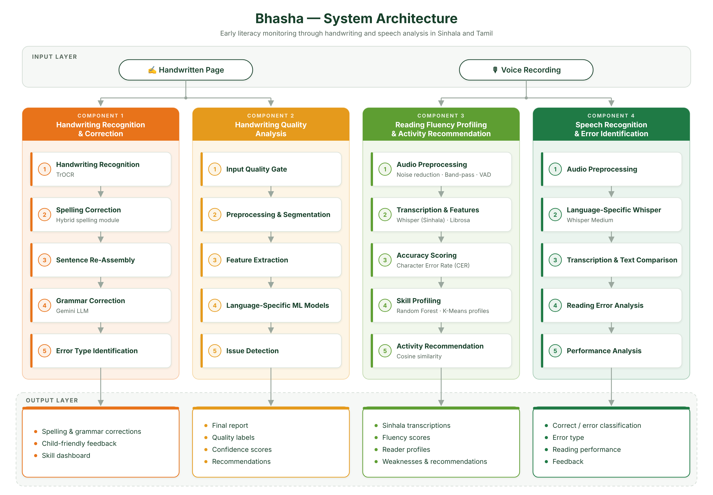

Early literacy is the foundation for a child's later academic success. Research on automating literacy assessment spans handwritten text recognition, handwriting-quality analysis, spelling and grammar correction, speech recognition and reading-fluency analysis. However, most existing work targets high-resource languages or adult users, and very little addresses young Sinhala and Tamil learners.
A. Handwriting Text Recognition, Spelling & Grammar Correction
Zhang et al. and Al Ali et al. fine-tuned TrOCR using a growing-chunk strategy, moving the model from single lines to full pages, while Faly et al. combined YOLOv8 line detection with a separately optimised TrOCR recogniser. None of these has adapted TrOCR to pencil-written Sinhala or Tamil on ruled exercise books. For spelling, SinSpell (Liyanapathirana et al.) expands static affix rules without ranking candidates, Sithamparanathan et al. rank suggestions with a generic language-model score, and neural correctors produce a single output without a confidence score to decide between auto-correcting and flagging. LLM-based grammar correction (e.g. Gemini) has mainly been evaluated on adults and university students, and rule-based feedback systems such as SinhaLearn return fixed, pre-written replies rather than explanations adapted to a child's mistake.
B. Handwriting Quality Analysis
Patil et al. showed that handwriting quality can be assessed from structural features such as stroke geometry, curvature, spacing, proportions and shape consistency, but without pedagogical feedback for children or Sinhala/Tamil script requirements. Arambewela et al. built a real-time Sinhala writing assistant for kids focused on letter-level support, and Sivapalan documented common Tamil handwriting difficulties among primary learners with remedial guidance — but no automated, computational quality-assessment model covering word spacing, baseline alignment, size consistency and page-level organisation.
C. Speech Recognition & Error Identification
ARUNALU (Sandathara et al.) combined voice recognition with phonological instruction for Sinhala readers, Sumanasena studied early akshara knowledge in beginner Sinhala readers, and Zhang et al. used AI transcription to analyse children's speech clarity. These studies show the value of speech analysis, but offer limited computational methods for automatically examining children's oral reading, identifying reading errors, or evaluating language-specific pronunciation.
D. Reading Fluency Profiling & Activity Recommendation
ARUNALU relies on rule-based dyslexia screening rather than acoustic-feature-based fluency assessment. Perera and Sumanathilaka built a Whisper-based Sinhala speech-to-text pipeline with SinBERT and mT5/Mistral correction, but for adult text correction only. da Silva et al. predicted children's oral reading fluency with machine-learning models on Whisper features, but for Portuguese, without learner profiling or personalised activity recommendations.
Key Past Studies
#
Authors (Year)
Approach
Limitation
1
Zhang et al. (2023)
TrOCR extended for localisation-free, full-page OCR
Not trained on pencil-written Sinhala/Tamil on ruled books
2
Liyanapathirana et al. (2021)
SinSpell — Hunspell-based Sinhala spell checker
Candidates from static affix rules, no scoring or ranking
3
Francis et al. (2024)
SinhaLearn — NLP, CNN and OCR for Grade 5 scholarship students
Fixed, pre-written feedback; limited to 3–5 sentences
4
Arambewela et al. (2022)
Real-time Sinhala writing assistant for kids
Letter-level support only; no page-level quality assessment
5
Sandathara et al. (2020)
ARUNALU — voice recognition and phonological training for dyslexia
Rule-based screening; no acoustic fluency analysis or profiling
6
Perera & Sumanathilaka
Fine-tuned Whisper + SinBERT / mT5 for Sinhala dyslexia assistance
Adult text correction only; no fluency assessment
7
da Silva et al. (2025)
ML fluency prediction from Whisper ASR features
Portuguese only; no learner profiling or recommendations
Section 2
Research Gap
Existing work leaves the following gaps for primary-school literacy assessment in Sri Lanka:
No TrOCR model has been fine-tuned for pencil-written Sinhala or Tamil handwriting on ruled exercise books, which contain blue lines, shadows, eraser smudges and bleed-through.
Sinhala and Tamil spelling correctors do not rank candidates by both word frequency and edit distance, or use a confidence score to decide between auto-correcting and flagging a word.
Grammar-correction systems target adults and return fixed replies instead of child-friendly explanations adapted to each mistake.
There is no automated, explainable handwriting-quality model for Sinhala and Tamil that works beyond letter level and is validated against teacher ratings.
There is no automated oral-reading assessment for Sinhala and Tamil children that profiles readers by behaviour and recommends targeted practice activities.
Comparison with Existing Research
Research
Sinhala & Tamil
Children's handwriting recognition
Handwriting quality assessment
Oral reading analysis
Personalised child feedback
Sithamparanathan et al. [11]
✓
✗
✗
✗
✗
SinhaLearn — Francis et al. [15]
✗
✓
✗
✗
✗
Arambewela et al. [8]
✗
✗
✓
✗
✓
ARUNALU — Sandathara et al. [16]
✗
✗
✗
✓
✓
Perera & Sumanathilaka [21]
✗
✗
✗
✓
✗
🌿 Bhasha (Proposed)
✓
✓
✓
✓
✓
Section 3
Research Problem
Early literacy has become a serious educational concern in Sri Lanka, especially after the pandemic, as learning shifted toward digital devices and less time was spent on reading and writing. According to the Ministry of Education (2023), only 6% of Grade 3 students achieved the expected reading skills, while 94% did not reach the expected overall literacy standard. The same assessment found that 73% showed inadequate listening skills, 80% inadequate speaking skills, 63% needed reading assistance and 66% had not developed sufficient writing skills.
Children aged 8 to 10 are moving from learning to read to reading to learn, and those who fall behind struggle in later grades. Yet literacy assessment in primary schools is still mostly manual, time-consuming and hard to repeat regularly for every pupil. Automating it for Sinhala and Tamil is difficult: both scripts have complex letters and diacritics, children write in pencil on ruled exercise books with shadows and uneven lighting, and speech recordings are affected by background noise and varied pronunciation — while language technology for both languages remains limited.
Research Question
How can handwriting and speech from 8–10-year-old learners be analysed automatically to assess, monitor and improve their reading and writing skills in Sinhala and Tamil?
Section 4
Research Objectives
Main Objective
To develop a bilingual, multimodal early-literacy monitoring framework that automatically assesses the handwriting and oral reading of primary-school learners aged 8–10 in Sinhala and Tamil, and provides personalised, child-friendly feedback and practice support to learners, teachers and parents.
Sub-Objectives
1. Handwriting Text Recognition, Spelling & Grammar Correction
Recognise handwritten Sinhala and Tamil text with a fine-tuned TrOCR model, correct spelling and grammar errors, and explain each correction in child-friendly language.
2. Handwriting Quality Analysis
Assess handwriting quality with teacher-trained, language-specific ML models and give explainable feedback with personalised improvement suggestions.
3. Speech Recognition & Error Identification
Transcribe children's oral reading with fine-tuned Whisper models and identify reading errors, accuracy and reading behaviour.
Classify reading fluency, profile learners by reading behaviour and recommend targeted practice activities for their skill gaps.
Section 5
Methodology
The system takes handwritten pages and voice recordings from students. Handwritten samples are checked for spelling, grammar and handwriting-quality issues, which are corrected and explained in a child-friendly way with handwriting-specific suggestions. Voice recordings are transcribed and analysed to detect reading errors, assess fluency and measure reading proficiency. The skill profile, handwriting-quality metrics, feedback and fluency assessments from all four components are brought together in a unified dashboard for teachers and parents to monitor progress.

Figure 1: System overview of Bhasha
Research Pipeline
Data Collection→Pre-processing→Recognition (TrOCR / Whisper)→Analysis & Correction→Feedback & Dashboard
Dataset
Data source(s)
700+ randomly selected scholarship students aged 8–10 from Sinhala-medium schools in Colombo district and Tamil-medium schools in Batticaloa district; text corpora built from Grade 3–5 teacher guides
Size
2,098 Sinhala and 1,148 Tamil handwriting images; 4,207 Sinhala and 2,100+ Tamil audio recordings
Period / scope
Primary learners in Grades 3–5 (ages 8–10); single words and sentences from daily exercise books
A. Handwriting Text Recognition, Spelling & Grammar Correction — Sandali S. Karunarathna
Pages are classified by brightness and normalised, and blue ruled lines are removed. A pretrained TrOCR model is fine-tuned with the growing-chunk method: the page is split into smaller sections, each recognised and then reassembled in reading order. A per-word OCR confidence score routes low-confidence words to re-recognition and priority spell-checking. A hybrid spelling module checks each word against Hunspell and SinSpell dictionaries, frequency lists and root + suffix combinations, and ranks correction candidates by frequency and corpus-weighted edit distance — replacing a word only above a confidence threshold, otherwise flagging it. Errors are grouped into six categories (e.g. punctuation, vowel errors, letter confusions). Lines are reassembled into sentences, and Google's Gemini LLM corrects only genuine grammar errors (word order, subject–verb agreement, conjunctions, verb form), giving a technical explanation in English and a simple explanation in Sinhala or Tamil.
B. Handwriting Quality Analysis — Akshaya Thangaraja
Images go through skew correction, shadow and lighting normalisation, adaptive binarisation, noise reduction and ruled-line removal, then are segmented into lines, words and characters. Tamil analysis uses a 10-feature representation; Sinhala adds curve and loop, stroke consistency, density, shape consistency, upper–lower balance and spacing-variation features for a 15-feature representation. Logistic Regression, KNN, RBF-SVM, Extra Trees and Random Forest are compared with stratified five-fold cross-validation (Macro-F1), selecting Logistic Regression for Sinhala and Random Forest for Tamil. Features are validated against teacher sub-ratings with Spearman correlation; permutation importance and standardised coefficients explain predictions, and low-confidence results can be referred to a teacher. Detected issues (spacing, baseline, size, curves, broken strokes, imbalance) become kid-friendly improvement suggestions.
C. Speech Recognition & Error Identification — Akif Ahamed
Recordings are converted to 16 kHz mono, silence-trimmed, normalised and noise-reduced, then paired with their reference transcriptions. Separate Whisper models are fine-tuned for Sinhala and Tamil. Predicted and expected text are normalised (punctuation, spacing, Unicode) and compared to compute Word Error Rate and reading accuracy from substitutions, omissions and insertions. Reading time, speech rate and vocal energy are also recorded to describe reading behaviour and estimate the confidence of each evaluation.
D. Reading Fluency Profiling & Activity Recommendation — Nenuka N. Amaradasa
Each recording is cleaned using noise reduction, an 80–7000 Hz band-pass filter and VAD masking, then transcribed with a fine-tuned Sinhala Whisper model. Before scoring, ambiguous Sinhala letter pairs (ල/ළ, ශ/ෂ) are standardised. Reading accuracy is measured with Character Error Rate (CER). Librosa extracts timing features from the speech-only segments: reading rate (characters per second), hesitation count (pauses over 150 ms), average pause length, energy variance and duration. For each student, these are averaged into a four-dimensional skill vector covering accuracy, fluency, hesitation and sentence-length gap. K-Means groups the 62 students into three reader profiles. A Random Forest, validated with leave-one-student-out cross-validation, then predicts a child’s profile from a single new recording. Finally, the recommendation engine ranks practice activities by cosine similarity between the child’s weakest skill dimensions and each activity’s target skills. Mel-spectrogram CNNs were also evaluated as an alternative, but they underperformed and are not part of the final pipeline.
Section 6
Technologies Used
Recognition & Language Models
TrOCR (fine-tuned)OpenAI Whisper Small (fine-tuned)Google Gemini LLM
Machine Learning
CNN (fluency & difficulty)Logistic RegressionRandom ForestK-Means ClusteringKNNRBF-SVMExtra Trees
Each component was evaluated on held-out Sinhala and Tamil data, and the system was also reviewed by scholarship teachers and Sinhala instructors.
A. Handwriting Text Recognition (TrOCR)
Language
CER
WER
Exact Line Match
Sinhala
17.3%
42.9%
35.5%
Tamil
50.7%
78.1%
15.6%
B. Hybrid Spelling Correction
Tested on 1,068 Sinhala and 1,000 Tamil words and sentences: 660 correct samples were preserved, 298 incorrect samples were corrected, and only 5 errors remained uncorrected.
Module
True Positive Rate
Precision
F1-score
Hybrid spelling module
98.35%
73.89%
84.42%
C. Handwriting Quality Classification (5-fold CV, 990 samples)
Language
Model
Accuracy
Balanced Accuracy
Macro F1
Sinhala
Logistic Regression
90.2%
90.6%
90.4%
Tamil
Random Forest
78.7%
79.0%
78.0%
D. Speech Recognition (Whisper Medium)
Language
WER
CER
WER-derived Accuracy
Tamil
14.4%
–
85.57%
Sinhala
37.7%
29.8%
62.2%
E. CNN Fluency Classification (accuracy 61.1%)
Class
Precision
Recall
F1
Fluent
0%
0%
0%
Moderate
62%
93%
74%
Struggling
55%
24%
33%
F. K-Means Student Profiling
Profile
n
Accuracy
Fluency
Hesitation
Accurate & Slow & Hesitant
10
33%
30.7%
76.6%
Accurate & Slow Reader
34
22.9%
24.6%
37.2%
Accurate & Fast Reader
18
15.2%
61.3%
32.5%
Key Findings
The hybrid spelling module corrected almost all real spelling errors (98.35% true positive rate) while preserving correctly written words.
Teacher-trained handwriting-quality models reached 90.2% accuracy for Sinhala and 78.7% for Tamil, with explainable, feature-level feedback.
Fine-tuned Whisper Medium models can recognise children's reading in both languages (85.57% WER-derived accuracy for Tamil, 62.2% for Sinhala).
CER gave a more balanced fluency labelling than WER (20.1% Fluent, 58.6% Moderate, 21.3% Struggling vs. 78.7% Struggling with WER).
Learner profiling reached 66.75% accuracy per clip and 75.0% per student, identifying three reader profiles separated mainly by reading pace and hesitation.
Section 8
Limitations & Future Work
Limitations
Tamil handwriting recognition remains weak (50.7% CER), partly due to the smaller Tamil dataset.
The reader profiles come from only 62 students. And the teachers also agreed with each other only moderately (κ = 0.44), so the profiling is not yet proven at a larger scale.
Exercise-book images with blue ruled lines, eraser smudges and bleed-through make recognition and quality analysis harder.
The CNN fluency classifier did not recognise the Fluent class, and acoustic features alone poorly explained sentence difficulty.
Future Work
Collect larger and more diverse Sinhala and Tamil datasets, especially for Tamil handwriting and speech.
Reassess the CNN fluency approach and cluster validity as more student data becomes available.
Expand the dataset to more students and schools. Validate the reader profiles and recommendations with a larger panel of teachers (Fleiss’ κ).
Test whether three reader profiles remain optimal or whether other clustering methods represent learner subtypes better.